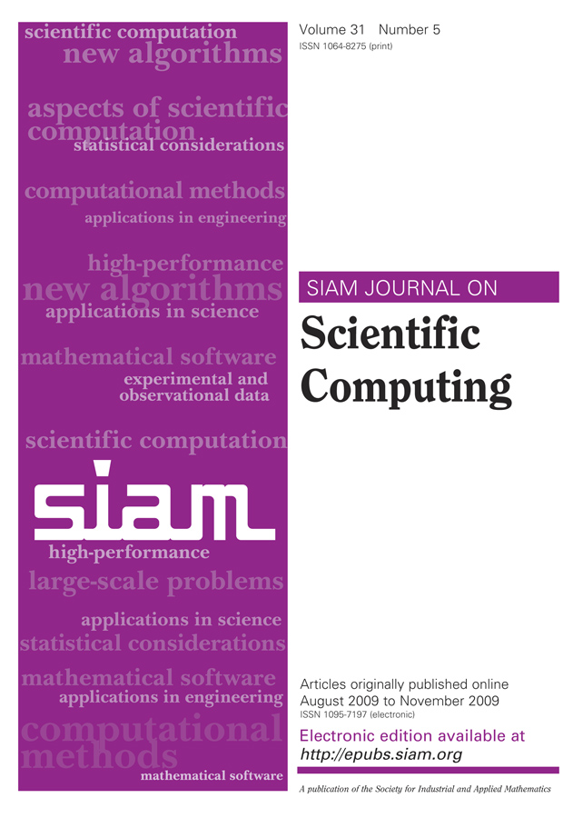

Resources for SISC Editors
A collection of useful information

Links
About speeding up the publication process: policies and reminders emails
Supplementary materials
Editorial policy
(section differences, page limit, etc.)
Associate Editor instructions
Associate Editor FAQ
Official SISC web page